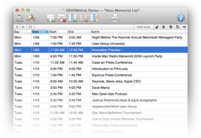

|
|
Sheets |
|
 Sheets contain text in a table and can be used to store any kind of tabular data from an address book to parse numbers and descriptions. Use sheets like any other document. Add new rows using Data > Sheets > Add Record, delete rows by selecting them and using Edit > Delete. Alternatively, use the contextual menu. Click a cell to edit its content, press the ⎋ key to stop editing, and use the Tab or Return keys to navigate from cell to cell. Sheets support the Edit > Find commands but currently no formattings. You can, however, enter line breaks by typing ⌥↩.
Toolbar & shortcuts Document windows opened for a sheet or record also feature a tool set specialized for working with sheets and records. Use tools like New Record, New Column, or Columns to create new records for the sheet, add a column, or modify the columns in any way you like. Please find a list of shortcuts in the appendix. Read more... Contextual menu The contextual menu for sheets basically lists the same commands that are also available through the main menu.
|